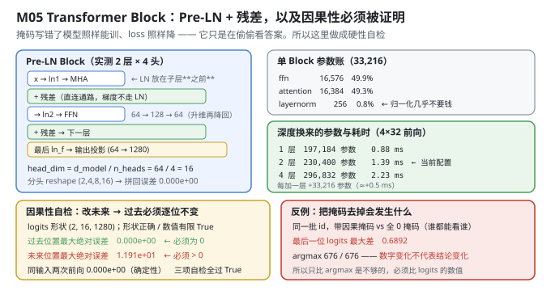
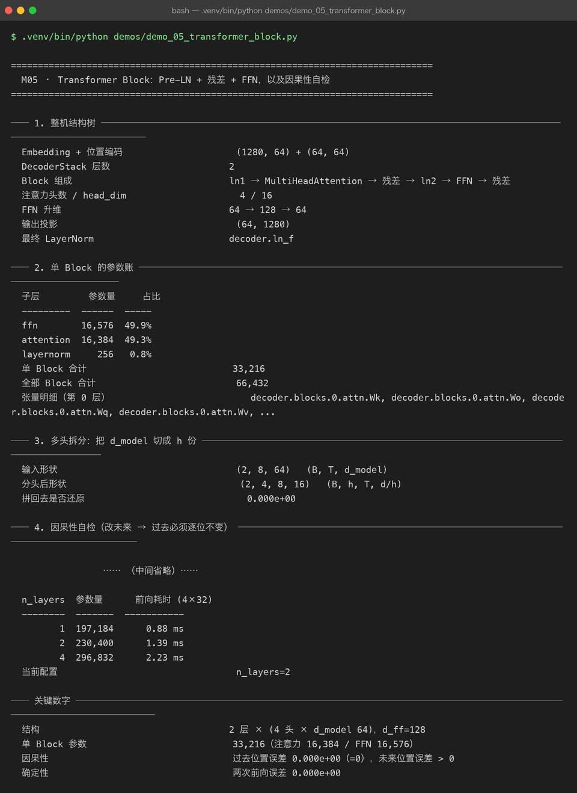

Milestone 05 — Transformer Block：Pre-LN + 残差 + FFN，以及因果性必须被证明
M04 把 id 变成了 (B, T, 64) 的向量。这一章把这堆向量送进真正干活的那一层：ln → 注意力 → 残差 → ln → FFN → 残差。
本章的核心不是"把结构画出来"，而是证明一个几乎无法用肉眼发现的错误不存在：因果掩码。它写错了，模型照样能训、loss 照样会降、验证集指标照样好看——只是它在偷偷看答案。所以这里把它做成一条硬性自检。
1. Why：三个必须被证明的不变量
一个 Decoder Block 里有三处"写错了也不会崩"的地方：
- 因果性。 位置
t的输出只能依赖≤ t的输入。判据很干净：把第t个位置之后的 token 全改掉，第t个及之前的 logits 必须逐位不变。误差是精确的 0，不是"很小"。 - 确定性。 同一输入跑两次必须逐位相同。这是 P08 那个确定性补丁生效的前提——
Tensor._prev如果是set，反向传播的加法顺序随对象地址变，跨进程就不可复现。 - 多头拆分的可逆性。 把
d_model切成h份再拼回来，必须还原。这一步错了不会报错，只会让每个头学到"残缺的、交错的信息"。
三条都不靠"我读代码看对了"，靠对着数字验。
2. Design：Pre-LN 的顺序是有代价的
x (B, T, d_model)
├─ h = x
├─ h = ln1(h) # LN 在子层**之前**
├─ h = MultiHeadAttention(h) # ← 因果掩码在这一层里加
├─ x = x + h # 残差：直连通路，梯度不经过 LN
├─ h = ln2(x)
├─ h = FFN(h) # 64 → 128 → 64
└─ x = x + h # 残差 → 下一层为什么是 Pre-LN（LN 放子层前面）而不是 Post-LN：Post-LN 里梯度要先穿过 LN 才回到残差，深模型上训练初期容易不稳；Pre-LN 让残差通路完全不经过归一化，梯度可以直连到最底层。代价是每层输出的量级会随深度累积，所以最后需要一个 ln_f 兜底——这就是输出投影前那个 LayerNorm 存在的理由。
多头拆分的形状变换（P06 的 MultiHeadAttention）：
(B, T, d_model) → reshape → (B, T, h, d/h) → transpose → (B, h, T, d/h)head_dim = d_model / n_heads = 64 / 4 = 16。拆的是"通道维"，不是"批次维" —— 所以 reshape 之后必须 transpose，让 h 和 T 换个位置，之后才能对 T 做 softmax。

3. Real-run evidence（来自 demos/out/demo_05_transformer_block_terminal.txt）

3.1 结构树
Embedding + 位置编码 (1280, 64) + (64, 64)
DecoderStack 层数 2
Block 组成 ln1 → MultiHeadAttention → 残差 → ln2 → FFN → 残差
注意力头数 / head_dim 4 / 16
FFN 升维 64 → 128 → 64
输出投影 (64, 1280)
最终 LayerNorm decoder.ln_f3.2 单 Block 的参数账：注意力与 FFN 几乎平分
子层 参数量 占比
--------- ------ -----
ffn 16,576 49.9%
attention 16,384 49.3%
layernorm 256 0.8%
单 Block 合计 33,216
全部 Block 合计 66,432这一条值得停一下：在大模型上 FFN 通常占绝大多数参数（往往是注意力的 2 倍以上），但在这里两者几乎相等（49.9% vs 49.3%）。
原因是 FFN 的参数量按 2 × d_model × d_ff 算，注意力按 4 × d_model² 算。令两者相等，解出 d_ff = 2 × d_model。当前配置恰好是 d_ff = 128 = 2 × 64 —— 所以它们必然平分。大模型之所以 FFN 占大头，是因为它们的 d_ff/d_model 通常取 4（GPT 系列），4 > 2，FFN 自然翻倍。
也就是说，"参数都在 FFN"这个直觉不是普遍规律，而是 d_ff/d_model = 4 这个具体选择的后果。在 d_ff = 2×d_model 的配置下，两者就是平手。这也是本章唯一一处会改变你对"模型长什么样"的认知的地方。
3.3 多头拆分：拆了还能拼回去
输入形状 (2, 8, 64) (B, T, d_model)
分头后形状 (2, 4, 8, 16) (B, h, T, d/h)
拼回去是否还原 0.000e+00还原误差是精确的 0。transpose → reshape 这一步看似只是搬数据，但顺序错了（比如漏了 transpose 就 reshape）就是另一套语义，而它不会报错。
3.4 因果性自检：改未来 → 过去必须逐位不变
logits 形状 (2, 16, 1280)
形状正确 / 数值有限 True / True
改未来后：过去位置最大绝对误差 0.000e+00 必须为 0
改未来后：未来位置最大绝对误差 1.191e+01 必须 > 0
同输入两次前向最大绝对误差 0.000e+00
三项自检是否全部通过 True自检的做法是：取一段 16 长度的输入，把后 8 个位置的 token 全部加 7 再取模（换成完全不同的词），然后比较前后两次前向：
- 前 8 个位置的 logits 误差 0.000e+00 —— 改未来完全不影响过去。这是因果掩码正确的判据。
- 后 8 个位置的 logits 误差 1.191e+01 —— 未来必须变。如果这里也是 0，说明注意力压根没起作用（比如权重全 0、或者残差把子层短路了），那是另一种坏掉。
两条都要满足，只看一条会漏。 只验"过去不变"，一个把注意力输出全置 0 的实现也能通过。
3.5 反例：把掩码去掉会发生什么
只验上面两条还不够——万一掩码本来就"全开"，过去不变也可能碰巧成立（比如序列很短）。所以做一个反向实验：用全 0 掩码（谁都能看谁）跑同一批 id。
带因果掩码 vs 不带掩码，最后一位 logits 最大差 0.6892
带掩码 / 不带掩码 的 argmax 676 / 676两个数字要连起来读：logits 的数值差到了 0.6892（确实被作弊影响了），但 argmax 是同一个 676。
这就是最阴的地方：如果只检查"预测出来的那个 token 对不对"，这个错误会被完全漏掉。 数值全错了，结论却没变。所以自检必须比 logits 的数值，不能比 argmax。掩码一旦失效，模型在训练时会持续看到"答案"，损失会降得更快、验证指标会虚高，而你在推理时用不到那些未来信息——训练和推理之间就断了一根线。
3.6 层数对照：深度换来的参数与耗时
n_layers 参数量 前向耗时 (4×32)
-------- ------- -----------
1 197,184 0.88 ms
2 230,400 1.39 ms
4 296,832 2.23 ms
当前配置 n_layers=2每加一层恒增 33,216 参数（即单 Block 参数量），耗时增加约 0.5 ms。参数是线性长的，耗时也是线性长的——在纯 numpy 的 CPU 实现上，没有 GPU 那种"深度几乎免费、宽度很贵"的特性。这也是后面 M09 量化能拿到 3.85× 加速的原因：算力瓶颈就在这些矩阵乘上，而它们可以被压到低精度。
4. 踩坑与反直觉发现
- "参数都在 FFN"不是规律，是
d_ff/d_model = 4的后果。 令2·d·d_ff = 4·d²得d_ff = 2d。当前d_ff = 2d，所以 FFN 与注意力参数几乎相等（49.9% vs 49.3%）。换成 GPT 的d_ff = 4d，FFN 立刻翻倍。记住这个比例，比记住"FFN 大"有用。 - 因果性自检必须双向验证。 只验"过去不变"是不够的——一个注意力恒输出 0 的实现也能过。必须同时要求"未来必须变"（实测 1.191e+01），两条一起才锁死。
- argmax 相等 ≠ 模型没被污染。 去掉掩码后，最后一位 logits 最大差 0.6892，但 argmax 依然是 676。这就是为什么自检要比数值。 任何"只看最终预测对不对"的测试，在掩码这类结构错误面前都是盲的。
- 多头拆分错在 transpose 上，不会报错。
(B,T,h,d/h)直接 reshape 回(B,T,d_model)在形状上完全合法，但语义已经变了（相当于把不同头的通道交错混在一起）。只有"拆完再拼、误差是否为 0"这一个检查能抓住它——这就是 3.3 那一行存在的意义。 - Pre-LN 需要
ln_f收尾，Post-LN 不需要。 因为残差通路不经过 LN，输出量级会随层数累积。这不是"多加一层更保险"，是结构选择的必然配套。
5. Conclusion
- 结构：2 层 × (4 头 × d_model 64)，d_ff = 128，单 Block 33,216 参数（注意力 16,384 / FFN 16,576 / LN 256），全部 Block 合计 66,432。
- 注意力与 FFN 参数几乎相等（49.3% vs 49.9%），因为
d_ff = 2 × d_model。这是配置的后果，不是普遍规律。 - 多头拆分还原误差 0.000e+00；
head_dim = 16。 - 因果性：过去位置误差 0.000e+00（必须为 0），未来位置误差 1.191e+01（必须 > 0）；同输入两次前向 0.000e+00；三项自检全部通过。
- 反例证明：去掉掩码后最后一位 logits 最大差 0.6892，但 argmax 仍为 676 ⇒ 只比 argmax 会漏掉这类错误，必须比数值。
- 层的代价是线性的：每层 +33,216 参数、+0.5 ms（4×32 前向）。当前 230,400 参数、1.39 ms。
6. Code map
| 文件 | 职责 |
|---|---|
src/tiny/model.py | forward_sanity（三条不变量：形状 / 因果 / 确定）/ build_model / walk_parameters / parameter_report |
P06 model/decoder.py | DecoderStack / Block（Pre-LN + 残差）/ ln_f |
P06 model/attention.py | MultiHeadAttention（拆头 reshape + 因果掩码在此生效） |
P08 src/ft/paths.py | enable_deterministic_autograd()（把 _prev 从 set 改成有序 list） |
demos/demo_05_transformer_block.py | 6 节：结构树 / 参数账 / 多头拆分 / 因果自检 / 掩码反例 / 层数对照 |
demos/out/demo_05_transformer_block_terminal.txt | 本章所有数字的来源 |
assets/transformer-block.svg | Pre-LN 结构 + 参数账 + 因果自检 + 反例 |
assets/term-05-transformer-block.png | 真实运行截图 |
7. Version line
v0.4 → v0.5，Transformer Block 结构落地并被逐项验真。实测：2 层 × 4 头 × d_model 64、d_ff=128；单 Block 33,216 参数（attention 16,384 / FFN 16,576 / LN 256），注意力与 FFN 平手（49.3% vs 49.9%），因为 d_ff = 2·d_model；多头拆分还原误差 0.000e+00；因果性过去位置 0.000e+00 / 未来位置 1.191e+01 / 确定性 0.000e+00，三项自检全过；掩码反例：最后一位 logits 最大差 0.6892 但 argmax 同为 676（⇒ 必须比数值）；深度 1/2/4 层 → 197,184 / 230,400 / 296,832 参数与 0.88 / 1.39 / 2.23 ms。配图 1 张手写 SVG + 1 张真实终端截图。